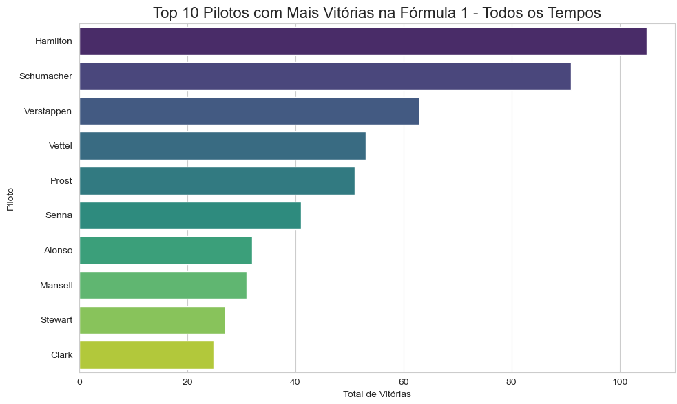

Fórmula 1 — Piloto e equipe
Problema / pergunta
O melhor piloto só venceu porque tinha o melhor carro? Explorar a associação entre vitórias de pilotos e desempenho de construtores por temporada.
Dados
Arquivos CSV históricos de Fórmula 1; o README cita o Kaggle sem identificar a versão. Há tabelas de corridas, pilotos, construtores, resultados, tempos e classificação.
- Fonte
- Documentada no README do projeto; referência exata a confirmar.
- Licença dos dados
- Não documentada no projeto; confirmar as condições de reutilização na fonte. A licença do template não se aplica aos dados.
- Período e volume
- Não documentados no README. Conferir a versão dos arquivos antes de reportar o recorte e a contagem.
Pipeline
Leitura dos CSVs com pandas; junções pelas chaves de pilotos, construtores e corridas; agregações anuais; visualizações com matplotlib e seaborn.
Método
Contagem de vitórias, comparação entre piloto e equipe com mais vitórias por ano e construção de um índice com métricas normalizadas e pesos definidos no notebook.
Resultados
Análise em revisão
Os indicadores ainda precisam ser validados. Os 3–5 resultados numéricos do case serão apresentados após essa revisão.

As tabelas e os gráficos exploratórios estão disponíveis no notebook HTML abaixo.
Stack
Python · pandas · NumPy · matplotlib · seaborn · Jupyter
Limitações e próximos passos
Os pesos do índice são arbitrários. Vitórias não isolam o efeito do carro e a comparação não estabelece causalidade. Revisar empates, regras de classificação e comparabilidade entre épocas.